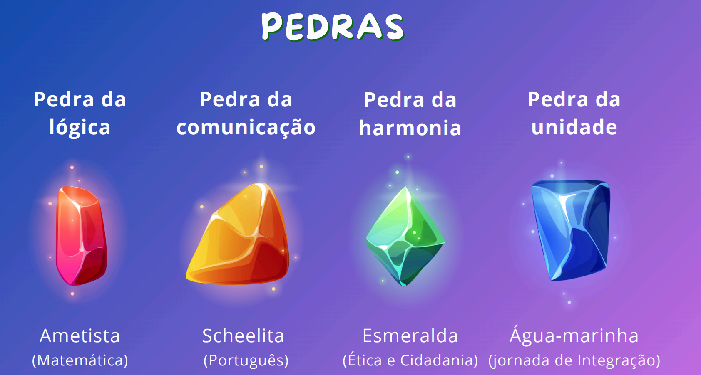
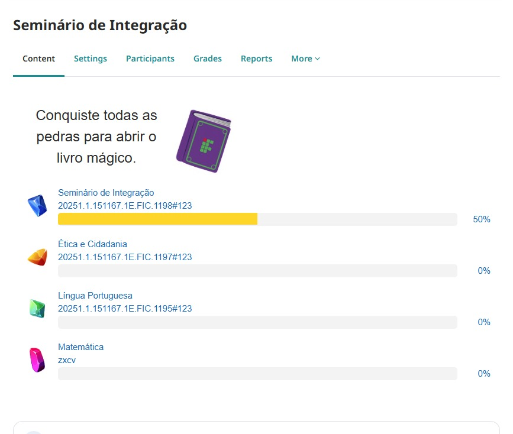

📜
Codex ProITEC
O Livro Místico onde o aluno reúne as 4 Gemas do Conhecimento ao concluir atividades nas disciplinas. Ao completar a chave do Codex, o estudante desbloqueia a recompensa máxima: o Mapa de Dicas do Exame de Seleção do IFRN!

Ver Documentação Lúdica do Codex →
🗺️
Mapa ProITEC
Uma expedição geográfica e pedagógica pelo estado do Rio Grande do Norte! O aluno visualiza sua jornada evoluindo através das mesorregiões e campi do IFRN conforme conclui as etapas do curso.

Ver Documentação Lúdica do Mapa →
🏆
Medalhas ProITEC
Uma coleção vibrante de 8 troféus e medalhas de conquistas. Cada hábito positivo de estudo (assista a videoaulas, leia livros H5P, gabarite quizzes) recompensa o estudante com uma medalha animada!
Ver Documentação Lúdica de Medalhas →
📊
Multi Progress
Barras de progresso visuais representadas pelas Pedras do Saber. Permite ao aluno acompanhar seu avanço em tempo real em Matemática, Língua Portuguesa, Ética e Seminário.

Ver Documentação de Trilhas →
📦
Block Multi Progress
O antepassado lendário! O bloco de barra de progresso original que abriu caminho para a suíte. Foi substituído com sucesso pelo módulo interativo mod_multiprogress.

Ver Histórico do Bloco →